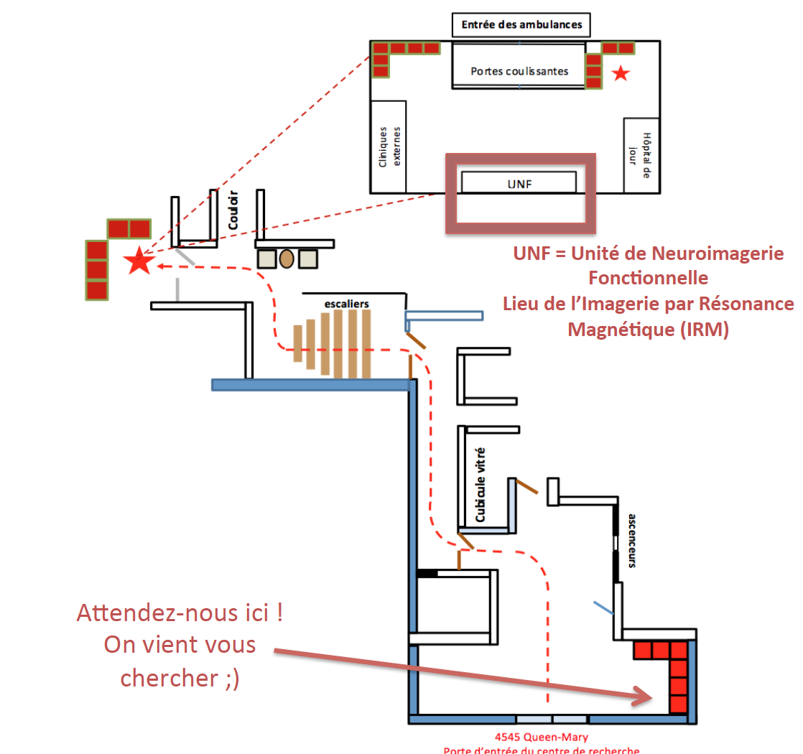

Introduction to the Unité de Neuroimagerie Fonctionnelle (UNF)
General information
Please spend some time to browse through the UNF website www.unf-montreal.ca

Answers to most of your questions can be found on the website; whether, you are setting up an experiment, wanting to find out the dates for submitting a project, looking for forms or recuperation imaging data, the latest information are available.
UNF contact list
| Name | Title | Phone | |
|---|---|---|---|
| Pierre Bellec | Scientific director | (514) 340-2800 Ext. 3367 | pierre.bellec@criugm.qc.ca |
| Julien Cohen-Adad | Associate director | (514) 340-5121 Ext.2264 | jcohen@polymtl.ca |
| Karim Jerbi | Associate director | karim.jerbi@umontreal.ca | |
| Habib Benali | Associate director | (514) 340-2800 Ext. 4785 | habib.benali@imed.jussieu.fr |
| Claude Godbout | Admistrative coordinator UNF | (514) 340-2800 Ext. 3633 | claude.godbout@criugm.qc.ca |
| Carollyn Hurst | MRI technologist | (514) 340-2800 Ext. 4722 | carollyn.hurst@criugm.qc.ca |
| André Cyr | Technical coordinator | (514) 340-2800 Ext. 4723 | andre.cyr@criugm.qc.ca |
| Arnaud Boré | Systems administrator | (514) 340-2800 Ext. 3938 | arnaud.bore@gmail.com |
| Basile Pinsard | Systems administrator | (514) 340-2800 Ext. 3938 | basile.pinsard@gmail.com |
Page internet du personnel de l’UNF
Hours of Operation
MRI Session and Control room
Regular Working Hours
- Monday – Friday, except Statutory Holidays
9:00-12:00 and 13:00-17:00
Outside of Regular Working Hours
- Lunch time, weekends, evenings, nights and statutory holidays
Contact the UNF staff for more information. An authorization is required to access the MRI room and control room outside of normal business hours.
Simulation Room
Regular Working Hours
- Monday – Friday, except Statutory Holidays
- if technical assistance is required from UNF Staff.
OR
- if you do not have an access
card for the UNF.
9:00-12:00 and 13:00-17:00
Outside of Regular Working Hours
- if NO technical assistance is required from the UNF Staff
AND
- you have a UNF access card.
24 hours a day / 7 days a week
No charge is associated with using the simulation room if a project for MRI has been approved by the ethics committee.
Access the UNF
Where is the UNF
| To access the CRIUGM | To access the UNF | The UNF |
|---|---|---|
 |
 |
 |
| ### To enter the UNF – access card |
{kind=link}
To enter the UNF, you must have a magnetic card. The contact person for an access card is Claude Godbout. A $20 deposit is required to get a card.
UNF Zones